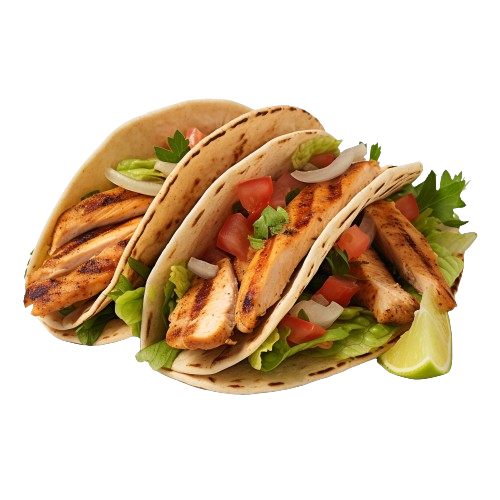

Bell Burrito Supreme

Preparation Time:
20 mins
Cook Time:
15 mins
Total Time:
35 mins
Ingredients:
Flour tortillas
Ground beef
Refried beans
Cheddar cheese, shredded
Lettuce, shredded
Tomatoes, diced
Sour cream
Guacamole
Salsa
Optional: Jalapeños, sliced
Directions:
Cook ground beef in a skillet until browned. Drain excess fat.
Warm flour tortillas in a dry pan or microwave.
Spread refried beans on each tortilla.
Top with cooked ground beef, shredded cheddar cheese, lettuce, tomatoes, and any optional toppings.
Roll up the tortillas to form burritos.
Serve with sour cream, guacamole, and salsa on the side.
Enjoy your Bell Burrito Supreme!